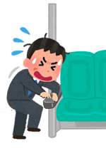

地震発生 - 電車・バス -

緊急地震速報が鳴り出したら
 窓側から離れて、つり革や手すりにつかまり、姿勢を低くして急停車に備えてください。身の安全を確保する
机カバン等で頭部守る、つり革や手すりにつかまるなど、当面の安全を確保してください。 あわてて車外に飛び出すのは大変危険ですので、避けてください。
揺れが収まったら
基本的には乗務員・駅員などの指示に従って行動してください。 ただし、危険が予測されるのに適切な指示が無い場合は、自ら行動することも選択肢としてください。 パニック状態に陥った集団に巻き込まれると、集団転倒の恐れもありますので注意してください。